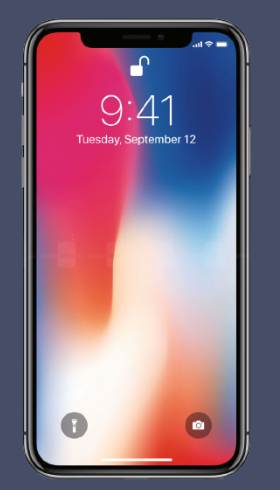
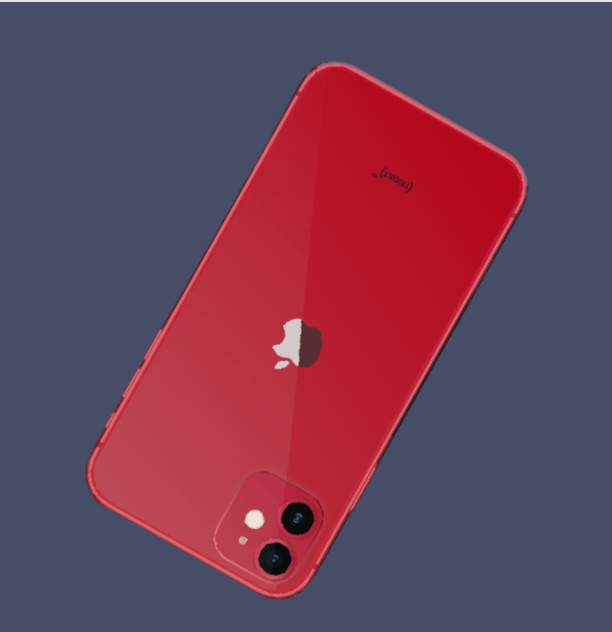

The first iphone had a diagonal screen of 3.5 inches,
but it was revolutionary.
It was like a handheld computer, with a couple apps and an intuitive design.
Though it recieved lots of critisism beforeits debut,
without this, our world would have never
made this giant technological leap.
The latest iPhone has a 6.7 inch display and clarity out of this world
Its camera is crazy and has several small details
It is sleek and has facial recognition. With a smooth surface and an ethereal color scheme, its a perfetct phone!
1.Security
- With iPhone, security is guaranteed. It has touch id, face id, and protects passwords better than anything else. Your information will be heavily guarded and it even has designated apps that
assure family safety. For instance, iPhone has an option to track the amount of time one spends on their phone. This prevents over usage. Iphones
also have an option to connect all family devices and track them.
2.Quality
- Iphones are made of high quality materials and one can tell by the design. The quality of these phones are far greater than any other.
With a perfect display and perfect cameras. Each phone has a special upgrade that makes it better than its precessor.
3.Best Apps
- Iphones offer some of the best apps ranging from Apple Pay to iMessage. These apps are of great quality and a plus side is that
companies prefer to realease these apps on Apple platforms first.